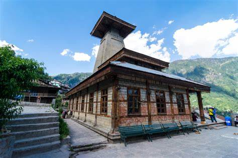

Images

Description
The Manu Temple is considered to be one of the most important pilgrimage sites in India and is visited by thousands of devotees every year. The temple is particularly revered by the local people of Himachal Pradesh, who believe that the sage Manu meditated at the site after he was saved from a great flood by the god Vishnu. According to legend, it was at this site that Manu wrote the Manusmriti, the ancient Hindu text that lays down the laws of human society.